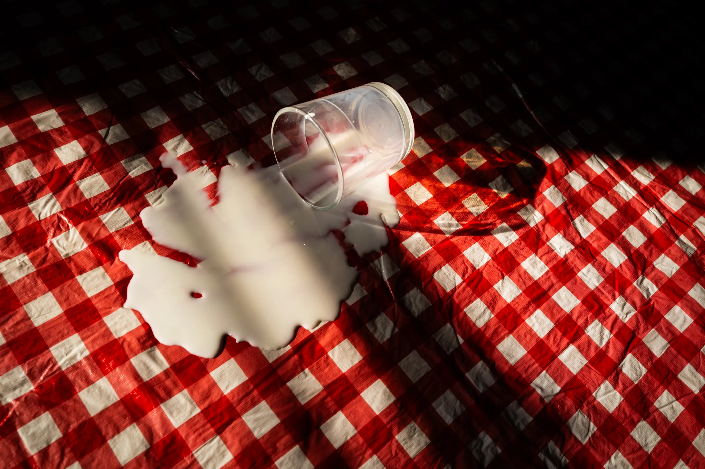
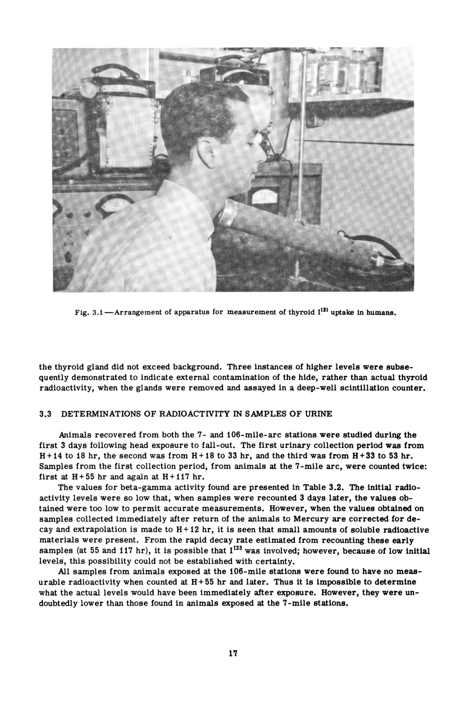
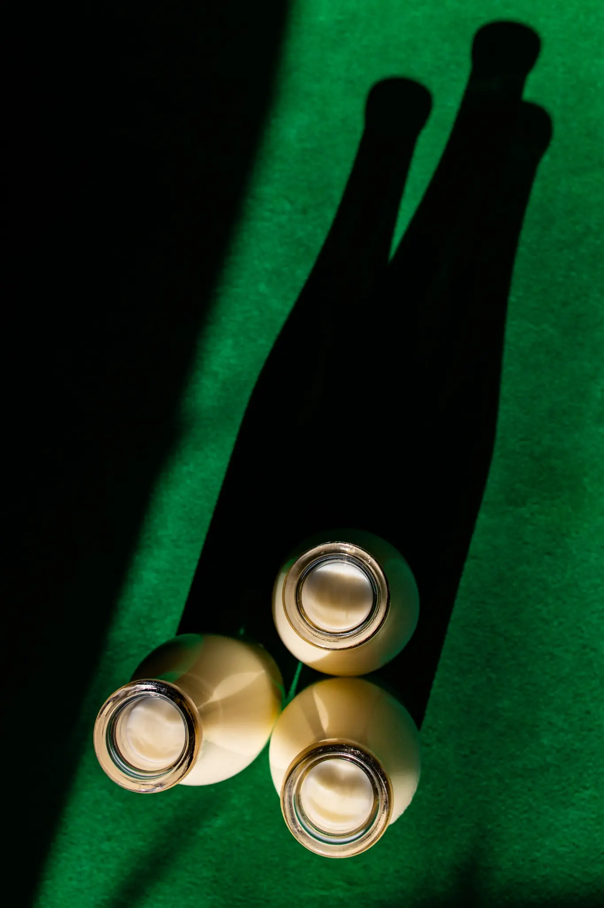
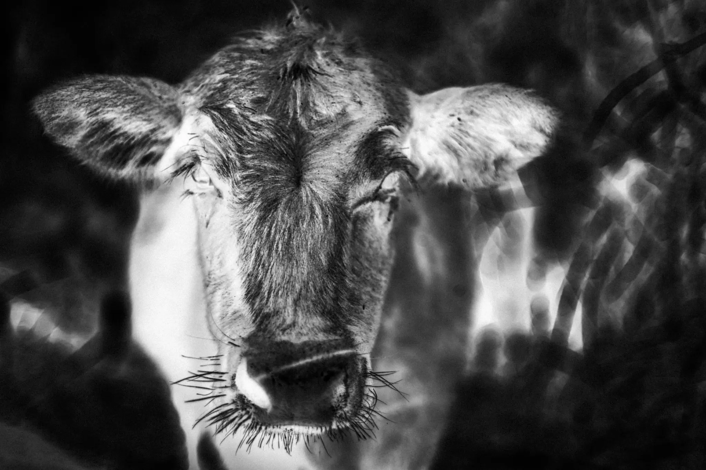

The Milk Route traces radioactive fallout from nuclear tests in Nevada as it moved into the Dairy Belt, passing through milk, bodies, and generations and leaving clusters of thyroid cancer and long-term illness in its wake. The project is an investigation and interpretation of what was left behind. It asks how we can move forward without first looking back at the damage we have done—to the land, to human bodies, and to generations who inherited consequences they were never told about.
A contamination pathway disguised as an ordinary food chain.



Between 1951 and 1962, the U.S. Atomic Energy Commission oversaw 100 atmospheric tests in the Nevada desert. Together, they produced about one megaton of explosive force—roughly equivalent to 67 Hiroshima bombs or 48 Nagasaki bombs, and about 28 times the two bombings combined. The fallout did not remain in Nevada; it drifted across the continental United States, settling onto pasture and entering the food chain through milk.
A record assembled from fragments.
928 nuclear tests were conducted at the Nevada National Security Site. The land remains federally controlled and largely inaccessible, its history held behind fences and warning signs. I photographed from the perimeter, beginning and ending in Las Vegas and traveling through Tonopah and Ely, Nevada, and St. George, Utah. The road formed a wide circle around the test site, passing through desert towns and downwind communities. I was searching for what remains when the evidence is no longer visible: the memory held in the land, the fallout carried beyond the boundary, and the silence that settles over a place after the damage has been done.